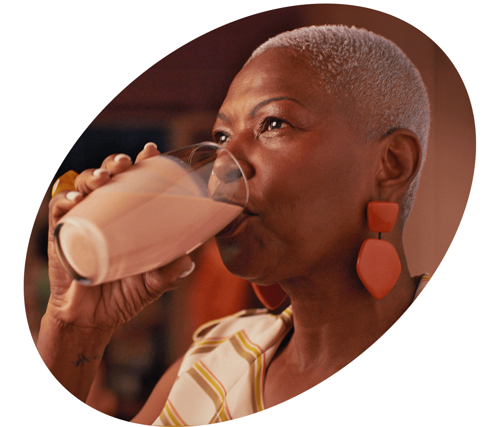

Guia
PRÓ
idade

SE ESTE GUIA CHEGOU ATÉ VOCÊ, É PORQUE ESTÁ NA HORA DE REPENSAR a SUA RELAÇÃO COM O ENVELHECIMENTO.
Este é um convite.
Um convite sobre viver mais e melhor
Sobre aprendizados, comportamentos, construção e legado para as próximas gerações.
Um convite que pode transformar seu olhar para o envelhecer
01
01
despertar
01
01
despertar
Des-
per-
tar
Este é um
convite para
desconstruir
estereótipos.
Contexto
Velho,
eu?
Sim
estamos
todos
envelhe-
cendo
cendo
Longevidade (S.F)
Do latim longaevus, que significa "aquele que vive muito tempo"

Nosso país está vivendo uma revolução demográfica sem precedentes.
- Expectativa de vida: de 43 para 77 anos de idade
- Brasil: 5º país com o maior % de pessoas 60+ em 2030
- Mundo: mais de 1 milhão de centenários
Apesar disso, ainda idealizamos e enaltecemos a juventude. Ainda retratamos pessoas mais velhas de maneira estereotipada. Ainda vivemos em uma sociedade com atitudes anti-idade.
Cultura e sociedade
Atitude
Pró-
idade
Para viver mais e melhor, é preciso
transformar nosso olhar sobre o envelhecer.
Só assim poderemos contribuir para uma
verdadeira transformação social. Isso é ser
Pró-Idade.
Para viver mais e melhor,
é preciso transformar nosso
olhar sobre o envelhecer.
Só assim poderemos
contribuir para uma
verdadeira
transformação
social. Isso é ser Pró-Idade.
Ser pro-idade
e saber que
A melhor fase
da vida é agora
Ser Pró-Idade é reconhecer que as
mudanças
do organismo são um
convite a novos
hábitos.
E as mudanças do corpo a novos
olhares.
É descobrir que as transformações da
rotina são oportunidades de aprendizado.
E
perceber
que nunca é tarde para aprender.
É honrar sua trajetória ao ser
gentil
com seu proprio envelhecimento.
Com empatia do envelhecimento
do outro,
É entender que envelhecer só
acontece
em uma jornada de vida bem-sucedida.
Como ser Pró-Idade
e, assim,
experimentar a longevidade com
plenitude?
Como ser Pró-Idade e, assim, experimentar a longevidade com plenitude?
CONVITE À MUDANÇA
Viva o
presente.
Vislumbre
o futuro.
As boas escolhas de hoje aumentam
as chances
de um futuro longevo e de qualidade
As boas escolhas de hoje aumentam as chances de um futuro longevo e de qualidade
Tenha um olhar generoso para sua biografia
Sua trajetória é única. E chegar até
aqui te fez ser exatamente quem você
é.
Por isso, sua idade merece ser
celebrada e sua história,
honrada.
E não estamos falando sobre
nostalgia, mas sobre se orgulhar de
si e seguir em frente com a mesma
vontade de viver.
Sua trajetória é única. E chegar até
aqui te fez ser exatamente quem você
é.
Por isso, sua idade merece ser
celebrada e sua história,
honrada. E não estamos falando sobre
nostalgia, mas sobre se orgulhar de
si e seguir em frente com a mesma
vontade de viver.
Imagine sua vida
daqui a 10 anos
Como estará seu corpo físico? Com
quem você gostaria de estar
convivendo?
Como será a sua
rotina? Esse exercício é importante
para que você possa fazer, hoje, as escolhas que vão determinar
seu amanhã.
Como estará seu corpo físico? Com
quem você gostaria de estar
convivendo?
Como será a sua
rotina? Esse exercício é importante
para que você possa fazer, hoje, as
escolhas que vão determinar seu
amanhã.
Respeite as gerações
para aprender com as diferenças
Já que a vida é feita de fases, todos nós, de alguma forma, estamos rodeados de diferentes gerações. E não há uma geração “melhor” ou “pior” do que a outra: existe variedade e, com isso, oportunidades de aprendizado.
Já que a vida é feita de fases,
todos nós, de alguma forma, estamos
rodeados de diferentes gerações.
E não há uma
geração “melhor” ou “pior” do que a
outra:
existe variedade e, com isso,
oportunidades de aprendizado.
NINGUÉM MELHOR QUE VOCÊ PARA TOMAR
AS RÉDEAS DA SUA
PRÓPRIA JORNADA
DE ENVELHECIMENTO.
Cada fase da vida
traz aprendizados.
É preciso estar atento
e aberto para a construção
de um novo repertório.
02
Expandir
Este é um
convite
para você
se atualizar.
Contexto
Etarismo:
O que
isso tem
a ver
comigo ?

Etarismo (S.M.)
Do inglês
ageism,
denomina a discriminação
e o preconceito baseados na idade;
idadismo
Estima-se que 1 em cada 2 pessoas no
mundo tenha atitudes discriminatórias
que pioram a saúde física e mental de
adultos 60+ e reduzem sua qualidade de
vida.
No Brasil, um primeiro passo foi dado
com o Estatuto do Idoso. Mas é preciso
mais
do que isso: para combater o
etarismo, é necessário transformar nosso
comportamento
e nossas atitudes.
A mudança pode começar com uma linguagem
mais inclusiva, que vai fomentar
a cultura Pró-Idade.
Cultura e Sociedade
Vamos Atualizar nossa linguagem

03
Planejar
03
03
Planejar
03
03
Planejar
Pla-
ne-
jar
Este é um convite
para você viver
a sua idade
do seu jeito.
Introducao ao planejamento
Quanto
mais cedo,
melhor,
mas nunca
é tarde
demais
é tarde
Este guia prático vai te ajudar a planejar seus próximos anos, para você viver a sua idade do seu jeito, de maneira leve e consciente.
Vale dizer que começar é um verbo que se
conjuga em qualquer idade. Tenha você
8 ou 80 anos, bons hábitos sempre favorecem
o tempo que ainda está por vir.
Cultura e sociedade
Comuni-
dade,
relações
e amizades
Nas regiões do planeta onde se concentram os centenários, se observa que a vida em comunidade é um dos principais fatores de bem-estar e felicidade.
Isso porque ter amigos para enfrentar tanto os momentos felizes quanto os desafiadores aumenta a qualidade de vida de forma perceptível.
O que a ciência diz
1. Interações e conversas frequentes via internet podem reduzir o declínio cognitivo
Um estudo publicado no The Gerontological Society of America, realizado em 2023 com idosos acima de 75 anos, comprovou que estimular interações através de conversas via internet pode ser uma ferramenta efetiva para reduzir o isolamento e, por consequência, o declínio cognitivo. O experimento provocou aumento de performance em testes cognitivos e de fluência semântica, linguagem, memória e atenção.
2. Pessoas que têm relacionamentos mais calorosos permanecem fisicamente mais saudáveis à medida que envelhecem.
Há 85 anos, a Universidade de Harvard, nos Estados Unidos, conduz o mais longo estudo científico sobre felicidade da história, o "Estudo sobre o Desenvolvimento Adulto”, que aponta para a qualidade dos relacionamentos como o principal indicador de felicidade e saúde ao longo do envelhecimento.
Como colocar em prática
Para ir além
Busque fazer novos amigos todos os anos. Cada amigo traz consigo uma curadoria de temas inerentes à sua própria trajetória. Portanto, quanto mais diversa sua rede de afetos, mais ampla sua possibilidade de suporte, aprendizados e diversão.
SAÚDE
E BEM-
ESTAR
Você já deve saber que o tripé “alimentação-sono-exercícios físicos” é fundamental para o bem envelhecer. Mas o que você também precisa saber é que a consistência é o que vai contar mais no final.
O que diz a ciência
1.
A duração e os padrões de sono
podem influenciar a expectativa de
vida.
De acordo com a Associação Americana do Coração, padrões irregulares de sono aumentam os riscos de doenças cardiovasculares e diabetes, além de reduzir a capacidade de memória, dificultar a concentração e afetar a saúde mental com questões como ansiedade e depressão. Por outro lado, dormir bem promove a redução do estresse, auxilia no controle emocional, melhora o funcionamento do sistema imunológico, da memória e do raciocínio.
2.
Uma perspectiva positiva sobre o
envelhecimento pode aumentar a
expectativa de vida em até 7,5 anos.
É o que mostra o estudo feito pela Ohio Longitudinal Study of Aging and Retirement, com base em uma amostra de 660 indivíduos.
3.
Ter músculos fortes é essencial
para manter a força e a autonomia.
brasileiras concluiu que a diminuição da força muscular é mais evidente a partir da sexta década de vida. A pesquisa fez uma comparação entre 4 grupos de faixas etárias, a partir dos 18 até os 82 anos.
Como colocar em prática
Emprega-
bilidade e
empreende-
dorismo
Intro
Para viver de forma longeva, é preciso fomentar uma vida ativa sob a ótica cognitiva, social e também financeira. Para isso, mais que conhecer suas competências, é importante saber combinar essas habilidades de maneira autêntica e autoral.
O que diz a CIÊNCIA
1. Ter um sentido de propósito pode adicionar anos a mais de vida
Isso é o que aponta o estudo liderado por Patrick Hill, da Carleton University, no Canadá. A pesquisa mostra resultados satisfatórios na promoção do envelhecimento positivo e no desenvolvimento adulto quando objetivos são estabelecidos de forma clara, apontando para uma direção de trabalho e execução.
2. Com o aumento da expectativa de vida no país, postergar a aposentadoria será quase inevitável
A pesquisa feita pela Ernest & Young em parceria com a Maturi mostra que a postergação da aposentadoria será quase inevitável com o aumento da expectativa de vida no país. Mas aponta também que os maturis permanecem ativos, em busca de novas oportunidades e de qualificação para se manter ou reingressar o mercado.
3. A pessoa madura e mais experiente pode contribuir positivamente em qualquer organização
Segundo o estudo “O Empreendedorismo Sênior no Brasil: uma análise do Perfil do Empreendedor”, de 2023, há indícios de que a pessoa madura, por possuir mais experiência pode contribuir positivamente em qualquer organização. Isso porque, dentre todas as faixas etárias de empreendedores, é a que possui maior percentual de empregadores.
Como colocar em prática
Para ir além
Se você está empregado, aproveite para expandir seus horizontes.
Busque novas atividades que irão expandir suas experiências para além do seu cargo.
Aproveite para conhecer pessoas de outras áreas e busque aprender todos os dias.
Se busca recolocação ou está em transição de carreira, cuide de suas conexões.
Busque expandir sua rede de conexões.
Esteja atento a oportunidades para colocar suas habilidades em ação.
Saiba que suas chances de monetizar
não se restringem a uma única
forma de trabalho.
Lembre-se: conforto e crescimento não andam juntos.
FOMOS ENSINADOS
A NOS PREPARAR
PARA AS DIFERENTES
ETAPAS DA VIDA.
ISSO TAMBÉM VALE
PARA O ENVELHECIMENTO.